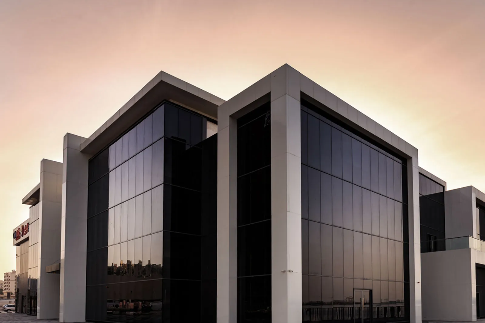

Shops.
Where Ajman shops — the City Life malls, the souk built for Ajman Municipality, and the stores a neighbourhood uses on a Tuesday.



Also: Schools · Homes — and one mosque.
Have a project in mind? Let’s talk.
Contact
Where Ajman shops — the City Life malls, the souk built for Ajman Municipality, and the stores a neighbourhood uses on a Tuesday.

Also: Schools · Homes — and one mosque.
Have a project in mind? Let’s talk.
Contact